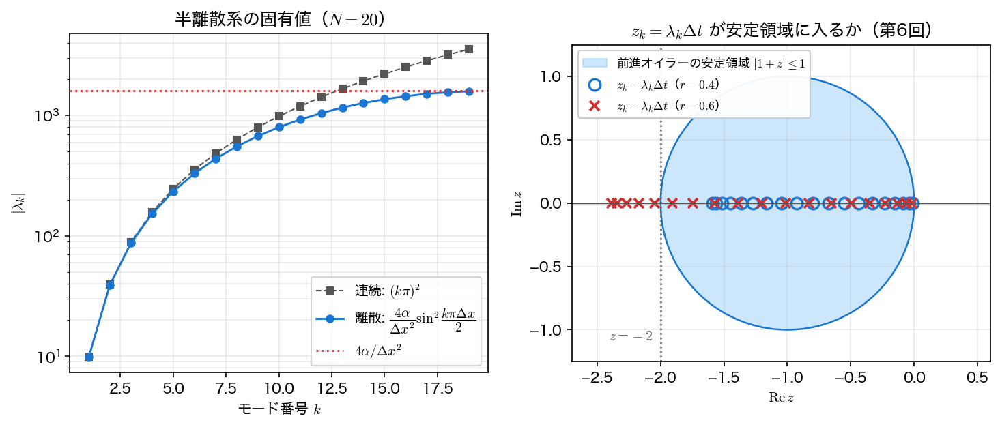

安定性解析
前々ページでは \(r\le1/2\) という安定条件を実験で見つけた。ここではそれを2通りの理論から導く。
- 線の方法＋第6回の絶対安定領域：半離散系の固有値 \(\lambda_k\) を求め、\(z_k=\lambda_k\Delta t\) が第6回の安定領域に入る条件を書き下す。
- フォン・ノイマン安定性解析（von Neumann stability analysis）：格子上のフーリエモード \(e^{\mathrm{i}k x}\) を更新式に直接代入し、1ステップの増幅係数を調べる。
2つは見かけが違うだけでまったく同じことを言っている。前者は「常微分方程式の安定性理論を再利用する」立場、後者は「偏微分方程式の解法として独立に判定する」立場で、後者のほうが手軽なので実務では圧倒的によく使われる。両方を経験しておくと、新しいスキームに出会ったときにどちらでも判定できる。
半離散系の固有値
線の方法で得た半離散系 \(\mathbf u'=A\mathbf u\) の行列
の固有値・固有ベクトルは、第7回の固有値問題で扱った \(-d^2/dx^2\) の離散版そのものである。固有ベクトルの第 \(i\) 成分を \(v_i^{(k)}=\sin(k\pi x_i)\) とおいて代入すると、三角関数の加法定理から
となり、これが固有ベクトルであることが確かめられる。固有値は
である。すべて負の実数で、値は \(0\) と \(-4\alpha/\Delta x^2\) の間に並ぶ。\(N=20\)（\(\Delta x=0.05\)、\(\alpha=1\)）で実際に計算すると次のようになる。
| \(k\) | \(\lambda_k\)（離散） | \(-(k\pi)^2\)（連続） | 相対誤差 |
|---|---|---|---|
| 1 | \(-9.849328\) | \(-9.869604\) | \(2.05\times10^{-3}\) |
| 2 | \(-39.154787\) | \(-39.478418\) | \(8.20\times10^{-3}\) |
| 3 | \(-87.194781\) | \(-88.826440\) | \(1.84\times10^{-2}\) |
| 5 | \(-234.314575\) | \(-246.740110\) | \(5.04\times10^{-2}\) |
| 10 | \(-800.000000\) | \(-986.960440\) | \(1.89\times10^{-1}\) |
| 19 | \(-1590.150672\) | \(-3562.927189\) | \(5.54\times10^{-1}\) |
ここに読み取るべきことが2つある。
低次モードはよく再現され、高次モードは大きく外れる。 \(k=1\) の固有値は連続の \(-\pi^2\) を \(0.2\%\) の精度で捉えているが、\(k=19\) では \(55\%\) もずれる。格子で表せるいちばん短い波は波長 \(2\Delta x\) で、それは「振動」というより「格子点ごとの符号反転」でしかなく、連続の世界の \(\sin(19\pi x)\) とは似ても似つかないからである。数値解が意味を持つのは、格子で十分に分解できる低次モードだけである。
最大の固有値は \(\Delta x^{-2}\) で爆発する。 \(\lvert\lambda\rvert_{\max}\approx4\alpha/\Delta x^2\)（\(N=20\) では \(1590.2\)、上限 \(1600\)）で、\(\Delta x\) を半分にすれば4倍になる。一方、最小の \(\lvert\lambda_1\rvert\approx\alpha\pi^2\) は \(\Delta x\) によらない。したがって第6回の剛比は
で、\(N=20\) ですでに \(161\)、\(N=320\) では \(41000\) を超える。空間を細かくするほど、拡散方程式は自動的に硬い問題になる。物理的には、細かい凹凸ほど速く均される（減衰の時定数が波長の2乗に比例する）という拡散の性質そのものである。
絶対安定領域から刻み幅の制限を導く
第6回では、テスト方程式 \(y'=\lambda y\) に1段法を当てたときの1ステップの増幅率を安定関数 \(R(z)\)（\(z=\lambda\Delta t\)）と呼び、\(\lvert R(z)\rvert\le1\) となる \(z\) の集合を絶対安定領域と呼んだ。連立系では対角化によって各固有値が独立に振る舞うので、すべての \(z_k=\lambda_k\Delta t\) が安定領域に入ることが必要十分になる。
前進オイラー法の安定領域は \(\lvert1+z\rvert\le1\)、つまり中心 \(-1\)・半径 \(1\) の円板である。\(\lambda_k\) はすべて負の実数だから、この円板と負の実軸の交わり \(-2\le z\le0\) に入ればよい。最も厳しいのは絶対値最大の固有値なので
すなわち \(r=\alpha\Delta t/\Delta x^2\le1/2\) である。\(N=20\) での厳密な値は \(\Delta t\le1.257742\times10^{-3}\)、漸近形 \(\Delta x^2/2\alpha=1.25\times10^{-3}\) とほぼ一致する（\(\sin^2\) の因子が \(1\) よりわずかに小さいぶん、実際の限界はごくわずかに緩い）。

この図が、第6回と第9回をつなぐ結び目である。「拡散方程式の安定条件」という PDE の話は、「半離散系の固有値が安定領域に入るか」という ODE の話に完全に翻訳できる。時間積分法を取り替えたときに何が起きるかも、この図の円板を差し替えるだけで分かる。たとえば後退オイラー法の安定領域は円板の外側で、負の実軸全体を含むから、どんな \(\Delta t\) でも \(z_k\) は必ず領域内にある——これが無条件安定の図形的な意味である。
\(\Delta x\) を変えたときの制限は次のように効く（\(\alpha=1\)、\(t=0.1\) まで解く場合）。
| \(N\) | \(\Delta x\) | \(\lvert\lambda\rvert_{\max}\) | \(\Delta t_{\max}\) | 必要ステップ数 |
|---|---|---|---|---|
| 10 | 0.10000 | 390.2 | \(5.0000\times10^{-3}\) | 20 |
| 20 | 0.05000 | 1590.2 | \(1.2500\times10^{-3}\) | 80 |
| 40 | 0.02500 | 6390.1 | \(3.1250\times10^{-4}\) | 320 |
| 80 | 0.01250 | 25590.1 | \(7.8125\times10^{-5}\) | 1280 |
| 160 | 0.00625 | 102390.1 | \(1.9531\times10^{-5}\) | 5120 |
| 320 | 0.00313 | 409590.1 | \(4.8828\times10^{-6}\) | 20480 |
格子点数を2倍にすると、1ステップの計算量が2倍、ステップ数が4倍で、総計算量は8倍になる。空間2次精度なので誤差は \(1/4\) にしかならない。「誤差を \(1/100\) にしたい」と思ったら計算量は \(1000\) 倍である。陽解法の限界がここにある。
フォン・ノイマン安定性解析
固有値を経由せずに、更新式へ直接フーリエモードを代入して安定性を判定する方法もある。境界条件を無視して（あるいは周期境界を仮定して）、数値解を格子上の平面波
の形に仮定する。\(\theta\) は1格子あたりの位相で、\(\theta\) が小さいほど長い波、\(\theta=\pi\) が格子で表せる最短波長 \(2\Delta x\) に対応する。\(G\)（増幅係数, amplification factor）は1ステップでこのモードが何倍になるかを表し、すべての \(\theta\) について \(\lvert G\rvert\le1\) であることが安定の条件である。
FTCS の更新式に代入すると、\(e^{-\mathrm{i}\theta}-2+e^{\mathrm{i}\theta}=2\cos\theta-2=-4\sin^2(\theta/2)\) だから
を得る。\(\lvert G\rvert\le1\) を要求すると、上限側 \(G\le1\) は \(r>0\) で自動的に満たされ、下限側 \(G\ge-1\) から
となる。右辺は \(\theta=\pi\) で最小値 \(1/2\) をとるので、最短波長 \(2\Delta x\) のモードが安定性を支配し、条件は \(r\le1/2\)——固有値から導いたものと同じである。
有限区間では厳密な限界がごくわずかに緩む
上の議論は \(\theta\) が \((0,\pi]\) を連続的に動くとして最悪値 \(\theta=\pi\) を採った。しかし \([0,1]\) を \(N\) 等分してディリクレ境界を課した実際の系に存在するモードは \(\theta_k=k\pi/N\ (k=1,\dots,N-1)\) の \(N-1\) 本だけで、\(\theta=\pi\) ちょうどは含まれない。最悪モードは \(k=N-1\)、すなわち \(\sin^2(\theta_{N-1}/2)=\cos^2\dfrac{\pi}{2N}\) なので、厳密な限界は
となり、\(1/2\) よりごくわずかに大きい（\(N=20\) で \(0.5031\)、\(N=100\) で \(0.5001\)）。\(N\to\infty\) で \(1/2\) に収束するので、実用上は \(r\le1/2\) と覚えてよい。以下でも断りなく \(r\le1/2\) と書く。
実は両者が一致するのは当然で、\(\theta=k\pi\Delta x\) とおけば
となり、増幅係数は安定関数に固有値を代入したものそのものだからである。フォン・ノイマン解析は、固有値分解を暗黙のうちに行っている。
\(r\) を変えたときの \(G\) の値を並べると、破綻の様子が数値で見える。
| \(r\) | \(G(\pi/4)\) | \(G(\pi/2)\) | \(G(\pi)\) | \(\max\lvert G\rvert\) | 判定 |
|---|---|---|---|---|---|
| 0.25 | 0.8536 | 0.5000 | 0.0000 | 1.0000 | 安定 |
| 0.40 | 0.7657 | 0.2000 | \(-0.6000\) | 1.0000 | 安定 |
| 0.50 | 0.7071 | 0.0000 | \(-1.0000\) | 1.0000 | 安定 |
| 0.60 | 0.6485 | \(-0.2000\) | \(-1.4000\) | 1.4000 | 発散 |
| 1.00 | 0.4142 | \(-1.0000\) | \(-3.0000\) | 3.0000 | 発散 |
\(r=0.5\) ちょうどでは \(G(\pi)=-1\)、つまり最短波長の成分は減衰も増幅もせず、符号だけを変えながら永久に残る（ぎりぎり安定）。\(r=0.6\) では \(\lvert G(\pi)\rvert=1.4\) で、40 ステップ後には \(1.4^{40}=7.0\times10^5\) 倍——陽解法のページで見た市松振動の正体である。
フォン・ノイマン解析の適用範囲
この解析は「境界の影響を無視し、係数が定数」という前提に立つ。したがって厳密には周期境界で線形・定数係数の問題に対する結果である。しかし実用上は、境界が解の内部の安定性に与える影響は小さいことが多く、変数係数や非線形の問題でも「局所的に係数を凍結して」適用すれば良い目安が得られる。手軽さゆえに、新しいスキームを設計したらまずこれを計算するのが定石である。
3手法の増幅係数を並べる
最短波長 \(\theta=\pi\) について3手法の \(G\) を並べると、第6回の A 安定性・L 安定性がそのまま見える。
| \(r\) | 前進オイラー \(1-4r\) | 後退オイラー \(\dfrac{1}{1+4r}\) | クランク＝ニコルソン \(\dfrac{1-2r}{1+2r}\) |
|---|---|---|---|
| 0.25 | 0.0000 | 0.5000 | 0.3333 |
| 0.50 | \(-1.0000\) | 0.3333 | 0.0000 |
| 1.00 | \(-3.0000\) | 0.2000 | \(-0.3333\) |
| 5.00 | \(-19.0000\) | 0.0476 | \(-0.8182\) |
| 50.00 | \(-199.0000\) | 0.0050 | \(-0.9802\) |
- 前進オイラー：\(r>0.5\) で \(\lvert G\rvert>1\)。条件付き安定。
- 後退オイラー：\(r\to\infty\) で \(G\to0\)。大きな \(\Delta t\) ほど高周波を強く潰す——これが L 安定の意味である。
- クランク＝ニコルソン：\(r\to\infty\) で \(G\to-1\)。減衰しないまま符号だけ反転する。A 安定だが L 安定でない。
\(r=50\) の行を見れば、後退オイラー法が最短波長を1ステップで \(1/200\) に潰すのに対し、クランク＝ニコルソン法は \(98\%\) の振幅を保ったまま符号を変えるだけ、という差が数値ではっきりする。前ページの図で見た負の温度は、この \(G\approx-1\) の直接の帰結である。
サンプルコード
固有値・刻み幅の制限・増幅係数を順に計算する。微分方程式は解かず、公式の値を並べるだけのプログラムである。
#include <stdio.h>
#include <math.h>
/* 第9回 拡散方程式: 線の方法とフォン・ノイマン安定性解析
(1) 半離散化 du_i/dt = (alpha/dx^2)(u_{i-1}-2u_i+u_{i+1}) の固有値
lambda_k = -(4 alpha/dx^2) sin^2(k pi dx / 2)
(2) 第6回の絶対安定条件 |R(z)| <= 1 (z = lambda dt) に代入して
前進オイラーの制限 r = alpha dt/dx^2 <= 1/2 を得る
(3) フォン・ノイマン解析の増幅係数 G(theta) = 1 - 4 r sin^2(theta/2) */
static const double PI = 3.14159265358979323846;
static const double ALPHA = 1.0;
int main(void) {
int N = 20;
double dx = 1.0/N;
/* ---- (1) 半離散系の固有値 ---- */
printf("=== 線の方法: 半離散系の固有値（N=%d, dx=%.3f, alpha=1）===\n", N, dx);
printf(" k lambda_k^h -(k pi)^2 相対誤差\n");
printf("---------------------------------------------------------\n");
int ks[] = {1, 2, 3, 5, 10, 19};
for (int j=0;j<6;j++){
int k = ks[j];
double lam = -(4.0*ALPHA/(dx*dx))*pow(sin(k*PI*dx/2.0), 2.0);
double lamc = -(double)k*k*PI*PI;
printf(" %4d %14.6f %14.6f %10.3e\n",
k, lam, lamc, fabs((lam-lamc)/lamc));
}
/* 作図用: 全モードの固有値と、z = lambda dt（r=0.4 と r=0.6）*/
FILE *fp = fopen("semidiscrete_eigen.dat", "w");
if (fp == NULL) { perror("semidiscrete_eigen.dat"); return 1; }
fprintf(fp, "# k lambda_h lambda_continuous z(r=0.4) z(r=0.6)\n");
for (int k=1;k<=N-1;k++){
double lam = -(4.0*ALPHA/(dx*dx))*pow(sin(k*PI*dx/2.0), 2.0);
fprintf(fp, "%d %.10e %.10e %.10e %.10e\n",
k, lam, -(double)k*k*PI*PI,
lam*0.4*dx*dx/ALPHA, lam*0.6*dx*dx/ALPHA);
}
fclose(fp);
double lmax = (4.0*ALPHA/(dx*dx))*pow(sin((N-1)*PI*dx/2.0), 2.0);
printf("\n |lambda|_max = %.4f (dx -> 0 の上限 4 alpha/dx^2 = %.1f)\n",
lmax, 4.0*ALPHA/(dx*dx));
printf(" 最小のモード lambda_1^h は連続の -pi^2 = %.6f をよく近似するが、\n", -PI*PI);
printf(" 最高波数のモードは連続の固有値から大きく外れる（格子で表せない振動）。\n");
/* ---- (2) 第6回の安定条件から刻み幅の制限 ---- */
printf("\n=== 前進オイラーの絶対安定条件 |1 + z| <= 1 (z = lambda dt) ===\n");
printf(" 必要条件: dt |lambda|_max <= 2\n");
printf(" dt <= 2/|lambda|_max = %.6e\n", 2.0/lmax);
printf(" dx^2/(2 alpha) = %.6e (dx -> 0 での漸近形)\n", dx*dx/(2.0*ALPHA));
printf(" すなわち r = alpha dt/dx^2 <= 1/2\n");
printf("\n dx を半分にすると |lambda|_max は 4 倍になり、許される dt は 1/4 になる。\n");
printf(" 格子を細かくするほど問題は硬く（stiff）なる。\n");
printf("\n=== dx を変えたときの制限（alpha=1, t=0.1 まで解く場合）===\n");
printf(" N dx |lambda|_max dt_max 必要ステップ数\n");
printf("----------------------------------------------------------------------\n");
int Ns[] = {10, 20, 40, 80, 160, 320};
for (int j=0;j<6;j++){
int Nk = Ns[j];
double dxk = 1.0/Nk;
double lm = (4.0*ALPHA/(dxk*dxk))*pow(sin((Nk-1)*PI*dxk/2.0), 2.0);
double dtmax = dxk*dxk/(2.0*ALPHA);
printf(" %5d %8.5f %12.1f %.4e %8.0f\n",
Nk, dxk, lm, dtmax, ceil(0.1/dtmax));
}
/* ---- (3) フォン・ノイマン解析 ---- */
printf("\n=== フォン・ノイマン解析: G(theta) = 1 - 4 r sin^2(theta/2) ===\n");
printf(" u_i^n = G^n exp(I i theta) を代入して得られる増幅係数。\n");
printf(" theta = k pi dx は 0 から pi まで動き、最悪は theta = pi（最短波長 2dx）。\n\n");
printf(" r G(theta=pi/4) G(theta=pi/2) G(theta=pi) max|G| 安定?\n");
printf("---------------------------------------------------------------------------\n");
double rs[] = {0.25, 0.40, 0.50, 0.60, 1.00};
for (int j=0;j<5;j++){
double r = rs[j];
double g1 = 1.0 - 4.0*r*pow(sin(PI/8.0),2.0);
double g2 = 1.0 - 4.0*r*pow(sin(PI/4.0),2.0);
double g3 = 1.0 - 4.0*r;
double mg = fmax(fabs(g1), fmax(fabs(g2), fabs(g3)));
if (fabs(1.0) > mg) mg = 1.0; /* theta -> 0 で G -> 1 */
printf(" %.2f %12.4f %12.4f %12.4f %8.4f %s\n",
r, g1, g2, g3, mg, (mg<=1.0+1e-12 ? "安定" : "発散"));
}
printf("\n r=0.6 では theta=pi の成分が毎ステップ %.1f 倍される。\n", fabs(1.0-4.0*0.6));
printf(" 40 ステップで %.3e 倍になり、丸め誤差から生じた振動でも計算を破壊する。\n",
pow(fabs(1.0-4.0*0.6), 40.0));
/* ---- (4) 3 手法の増幅係数（最短波長 theta=pi）---- */
printf("\n=== 最短波長 (theta=pi) に対する 3 手法の増幅係数 ===\n");
printf(" r 前進 1-4r 後退 1/(1+4r) CN (1-2r)/(1+2r)\n");
printf("--------------------------------------------------------------\n");
double rs2[] = {0.25, 0.5, 1.0, 5.0, 50.0};
for (int j=0;j<5;j++){
double r = rs2[j];
printf(" %6.2f %10.4f %13.4f %14.4f\n",
r, 1.0-4.0*r, 1.0/(1.0+4.0*r), (1.0-2.0*r)/(1.0+2.0*r));
}
printf("\n 後退オイラーは r -> 無限大 で 0（L 安定）、CN は -1 に近づく（A 安定だが L 安定でない）。\n");
return 0;
}
コンパイル・実行:
実行結果
=== 線の方法: 半離散系の固有値（N=20, dx=0.050, alpha=1）===
k lambda_k^h -(k pi)^2 相対誤差
---------------------------------------------------------
1 -9.849328 -9.869604 2.054e-03
2 -39.154787 -39.478418 8.198e-03
3 -87.194781 -88.826440 1.837e-02
5 -234.314575 -246.740110 5.036e-02
10 -800.000000 -986.960440 1.894e-01
19 -1590.150672 -3562.927189 5.537e-01
|lambda|_max = 1590.1507 (dx -> 0 の上限 4 alpha/dx^2 = 1600.0)
最小のモード lambda_1^h は連続の -pi^2 = -9.869604 をよく近似するが、
最高波数のモードは連続の固有値から大きく外れる（格子で表せない振動）。
=== 前進オイラーの絶対安定条件 |1 + z| <= 1 (z = lambda dt) ===
必要条件: dt |lambda|_max <= 2
dt <= 2/|lambda|_max = 1.257742e-03
dx^2/(2 alpha) = 1.250000e-03 (dx -> 0 での漸近形)
すなわち r = alpha dt/dx^2 <= 1/2
dx を半分にすると |lambda|_max は 4 倍になり、許される dt は 1/4 になる。
格子を細かくするほど問題は硬く（stiff）なる。
=== dx を変えたときの制限（alpha=1, t=0.1 まで解く場合）===
N dx |lambda|_max dt_max 必要ステップ数
----------------------------------------------------------------------
10 0.10000 390.2 5.0000e-03 20
20 0.05000 1590.2 1.2500e-03 80
40 0.02500 6390.1 3.1250e-04 320
80 0.01250 25590.1 7.8125e-05 1280
160 0.00625 102390.1 1.9531e-05 5120
320 0.00313 409590.1 4.8828e-06 20480
=== フォン・ノイマン解析: G(theta) = 1 - 4 r sin^2(theta/2) ===
u_i^n = G^n exp(I i theta) を代入して得られる増幅係数。
theta = k pi dx は 0 から pi まで動き、最悪は theta = pi（最短波長 2dx）。
r G(theta=pi/4) G(theta=pi/2) G(theta=pi) max|G| 安定?
---------------------------------------------------------------------------
0.25 0.8536 0.5000 0.0000 1.0000 安定
0.40 0.7657 0.2000 -0.6000 1.0000 安定
0.50 0.7071 0.0000 -1.0000 1.0000 安定
0.60 0.6485 -0.2000 -1.4000 1.4000 発散
1.00 0.4142 -1.0000 -3.0000 3.0000 発散
r=0.6 では theta=pi の成分が毎ステップ 1.4 倍される。
40 ステップで 7.000e+05 倍になり、丸め誤差から生じた振動でも計算を破壊する。
=== 最短波長 (theta=pi) に対する 3 手法の増幅係数 ===
r 前進 1-4r 後退 1/(1+4r) CN (1-2r)/(1+2r)
--------------------------------------------------------------
0.25 0.0000 0.5000 0.3333
0.50 -1.0000 0.3333 0.0000
1.00 -3.0000 0.2000 -0.3333
5.00 -19.0000 0.0476 -0.8182
50.00 -199.0000 0.0050 -0.9802
後退オイラーは r -> 無限大 で 0（L 安定）、CN は -1 に近づく（A 安定だが L 安定でない）。
可視化
stability.c は全モードの固有値を semidiscrete_eigen.dat（1列目 \(k\)、2列目 \(\lambda_k^{(h)}\)、3列目 連続の \(-(k\pi)^2\)、4・5列目が \(z_k=\lambda_k\Delta t\) を \(r=0.4\) と \(r=0.6\) で評価したもの）に書き出す。標準出力の表は6個のモードを抜き出しただけだが、ファイルには19個すべてが入っている。
import numpy as np
import matplotlib.pyplot as plt
k, lam_h, lam_c, z04, z06 = np.loadtxt("semidiscrete_eigen.dat", unpack=True)
N = len(k) + 1 # モードは k = 1 … N-1
cap = 4.0 / (1.0 / N) ** 2 # 固有値の上限 4 alpha / dx^2
fig, (ax1, ax2) = plt.subplots(1, 2, figsize=(11, 4.2))
ax1.plot(k, -lam_c, "s", ms=5, label="continuous $(k\\pi)^2$")
ax1.plot(k, -lam_h, "o", ms=5, label="semi-discrete $|\\lambda_k^{(h)}|$")
ax1.axhline(cap, color="red", ls=":", lw=1.2, label="$4\\alpha/\\Delta x^2$")
ax1.set_yscale("log")
ax1.set_xlabel("mode number $k$")
ax1.set_ylabel("$|\\lambda_k|$")
ax1.set_title("the discrete spectrum saturates")
ax1.grid(alpha=0.3)
ax1.legend(fontsize=9)
theta = np.linspace(0, 2 * np.pi, 400)
ax2.fill(-1 + np.cos(theta), np.sin(theta), color="skyblue", alpha=0.5,
label="$|1+z| \\leq 1$")
ax2.plot(z04, np.zeros_like(z04), "o", mfc="none", ms=7, label="$z_k$ at $r = 0.4$")
ax2.plot(z06, np.zeros_like(z06), "x", ms=7, label="$z_k$ at $r = 0.6$")
ax2.axhline(0.0, color="gray", lw=0.6)
ax2.axvline(0.0, color="gray", lw=0.6)
ax2.set_aspect("equal")
ax2.set_xlim(-2.6, 0.4)
ax2.set_xlabel("$\\mathrm{Re}\\,z$")
ax2.set_ylabel("$\\mathrm{Im}\\,z$")
ax2.set_title("$z_k = \\lambda_k \\Delta t$ and the stability region")
ax2.grid(alpha=0.3)
ax2.legend(fontsize=9, loc="upper left")
fig.tight_layout()
fig.savefig("semidiscrete_eigen.png", dpi=150)
plt.show()
実行:
左の縦軸は対数で、低次モードでは2本が重なり、高次では離散のほうが赤い上限に頭打ちになる。右では \(r=0.4\) の白丸が全点とも水色の円板の中に収まるのに対し、\(r=0.6\) の \(\times\) は最高次モードが円板の左へはみ出す。この1点のはみ出しが、前ページで見た \(r=0.6\) の発散である。
収束・整合性・安定性——ラックスの同値定理
数値解が真の解に収束するかどうかは、次の2つに分解できる。
- 整合性（consistency）：差分式が \(\Delta t,\Delta x\to0\) で元の微分方程式に戻ること。打ち切り誤差が \(0\) に収束すればよい。FTCS は \(O(\Delta t)+O(\Delta x^2)\) なので整合的である。
- 安定性（stability）：計算の途中で誤差が増幅されないこと。ここまで調べてきた条件である。
適切に設定された（well-posed）線形の初期値問題については、整合的なスキームが収束するための必要十分条件は安定であることが知られている（ラックスの同値定理, Lax equivalence theorem）。適用できるのはこの枠内に限られ、非線形問題や境界値を含む問題ではそのままの形では成り立たない（非線形では整合性＋安定性があっても解が有限時間で特異になれば収束は言えない）。第6回で「収束と絶対安定性は別物」と述べたが、実際に計算する立場では両方が要る、というのがこの定理の意味である。整合性だけ確かめて安定性を確かめずにコードを書くと、格子を細かくするほど結果が悪化するという事態に陥る。
まとめ
- 半離散系の固有値は \(\lambda_k=-\dfrac{4\alpha}{\Delta x^2}\sin^2\dfrac{k\pi\Delta x}{2}\)。固有ベクトルは \(\sin(k\pi x_i)\)。
- 低次モードは連続の \(-(k\pi)^2\) をよく再現するが、高次モードは大きく外れる。\(\lvert\lambda\rvert_{\max}\approx4\alpha/\Delta x^2\) で、剛比は \(O(N^2)\)。
- \(z_k=\lambda_k\Delta t\) が第6回の絶対安定領域 \(\lvert1+z\rvert\le1\) に入る条件が \(\Delta t\le\Delta x^2/2\alpha\)、すなわち \(r\le1/2\)。
- フォン・ノイマン解析は \(u_i^n=G^ne^{\mathrm{i}\theta i}\) を代入して増幅係数 \(G(\theta)=1-4r\sin^2(\theta/2)\) を得る。\(\theta=\pi\)（最短波長 \(2\Delta x\)）が最悪で、同じ \(r\le1/2\) が出る。
- 両者は \(G(\theta)=R(z_k)\) という関係で結ばれており、同じことを別の言葉で言っている。
- 3手法の \(G(\pi)\) は \(1-4r\)（条件付き安定）、\(1/(1+4r)\to0\)（L 安定）、\((1-2r)/(1+2r)\to-1\)（A 安定だが L 安定でない）。
- ラックスの同値定理：線形問題では「整合性＋安定性 \(\Longleftrightarrow\) 収束」。両方を確かめてはじめて数値解を信用できる。